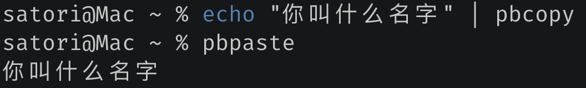
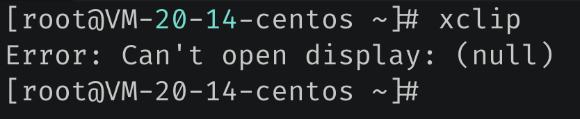

楔子
pandas 里面有一个 pd.read_clipboard 函数，可以根据你复制的内容生成DataFrame。是的，就是我们平时选中，然后 Ctrl+C 时拷贝的内容。所以比较神奇，那么 pandas 到底是怎么做到的，它是怎么读出我们使用 Ctrl +C 复制的内容呢。
看了一下源码，不同的操作系统使用的复制方式不同，Windows 比较复杂，方法是使用了ctypes，然后调用了操作系统的一个动态库实现的；而 macOS 和 Linux 比较简单，调用的是内置的命令。
下面我们来看看如何在这三个系统上实现复制粘贴的功能。
Windows 上的复制粘贴
我们说 Windows 是使用 ctypes 调用动态库实现的，比较麻烦。但是我们知道 Python 有一个 pywin32 模块，对于 Windows 操作系统提供的接口进行了封装。所以在 Windows 上我们会使用 pywin32 来实现复制粘贴功能。
该模块直接通过 pip install pywin32 安装即可。
import win32clipboard as wcb
import win32con as wc
# 打开复制粘贴板
wcb.OpenClipboard()
# 我们之前可能已经 Ctrl + C 了
# 这里是清空目前 Ctrl + C 复制的内容
# 但显然没有这一步也无所谓，因为第二次复制会覆盖第一次复制的内容
wcb.EmptyClipboard()
# 将内容写入复制粘贴板，第一个参数是 win32con.CF_TEXT
# 第二个参数是要复制的内容，编码的时候指定为 "gbk"
wcb.SetClipboardData(wc.CF_TEXT, "古明地觉".encode("gbk"))
# 关闭复制粘贴板
wcb.CloseClipboard()
然后 Ctrl+V 粘贴就会得到 "古明地觉" 这个字符串，另外编码的时候要使用 gbk，因为我当前操作系统默认编码使用的是 gbk，所以会对输入的字节使用 gbk 解码。因此如果使用 utf-8 编码的话，那么粘贴之后得到的就会是乱码。当然具体编码根据你当前的机器决定。
复制我们实现了，下面来看看怎么实现粘贴。
import win32clipboard as wcb
import win32con as wc
wcb.OpenClipboard()
# 获取粘贴板内容，既然是获取，那么只需要一个参数即可
# 会返回已经使用 Ctrl + C 复制的内容
data = wcb.GetClipboardData(wc.CF_TEXT)
# 关闭复制粘贴板
wcb.CloseClipboard()
# 然后随便 Ctrl+C 拷贝一段内容
# 下面就会将拷贝的内容打印出来
print(data.decode("gbk"))
还是很简单的，我们上面使用的模块是 win32 系列，所以它只适用于 Windows 系统。那如果我想在 Linux 和 macOS 中实现怎么办呢？也很简单，事实上，这两个系统实现起来反而会更简单，因为自带了相关的命令。
macOS 上的复制粘贴
macOS 自带了相关命令，我们只需要通过 subprocess 模块去调用即可，举个例子：

非常简单，那么代码要如何实现呢？
import subprocess
# 实现拷贝
def copy(text):
p = subprocess.Popen(["pbcopy", "w"],
stdin=subprocess.PIPE,
close_fds=True)
# 将内容拷贝起来，注意 macOS 的编码默认是 utf-8
p.communicate(input=text.encode("utf-8"))
# 实现粘贴
def paste():
p = subprocess.Popen(["pbpaste", "r"],
stdout=subprocess.PIPE,
close_fds=True)
stdout, stderr = p.communicate()
# 返回粘贴内容
return stdout.decode("utf-8")
copy("古明地觉的编程教室")
print(paste()) # 古明地觉的编程教室
以上代码在 macOS 上执行，由于自带了复制粘贴相关的命令，操作起来就比 Windows 方便多了。
Linux 上的复制粘贴
Linux 也提供了复制粘贴的命令，叫 xclip，但这个命令不是自带的，我们需要使用 yum 安装。
import subprocess
# 实现拷贝
def copy(text):
p = subprocess.Popen(
["xclip", "-selection", "c"],
stdin=subprocess.PIPE, close_fds=True
)
p.communicate(input=text.encode("utf-8"))
# 实现粘贴
def paste():
p = subprocess.Popen(
["xclip", "-selection", "c", "-o"],
stdout=subprocess.PIPE, close_fds=True
)
stdout, stderr = p.communicate()
return stdout.decode("utf-8")
但其实在 Linux 上通过命令实现复制粘贴没什么意义，因为我们都是通过 SSH 远程连接到公司的服务器，这种情况下 xclip 是不生效的。

当然，感觉这个功能也没多大用，当做兴趣了解一下就行。
pyperclip 实现复制粘贴
最后我们再来介绍一个模块，叫 pyperclip，它对不同的操作系统的复制粘贴功能进行了封装，可以简化我们的操作。举个例子：
import pyperclip
# 复制
pyperclip.copy("哼哼")
# 粘贴
print(pyperclip.paste()) # 哼哼
还是很方便的，以后就可以使用这个模块，自动帮我们屏蔽了操作系统间的差异。另外，这个模块只支持复制文本。